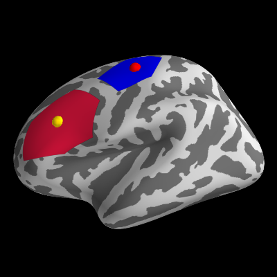

Plot a spheroid at a position on the surface manifold according to an MNI coordinate, generate a label around it and plot it.
Python source code: plot_label_foci.py
print __doc__
import os
from surfer import Brain, utils
subject_id = "fsaverage"
subjects_dir = os.environ["SUBJECTS_DIR"]
"""
Bring up the visualization.
"""
brain = Brain(subject_id, "lh", "inflated")
"""
First we'll get a set of stereotaxic foci in the MNI
coordinate system. These might be peak activations from
a volume based analysis.
"""
coord = [-43, 25, 24]
utils.coord_to_label(subject_id, coord, label='example_data/coord',
hemi='lh', n_steps=50, map_surface="white")
brain.add_label('example_data/coord-lh.label')
"""
Now we plot the foci on the inflated surface. We will map
the foci onto the surface by finding the vertex on the "white"
mesh that is closest to the coordinate of the point we want
to display.
"""
brain.add_foci([coord], map_surface="white", color="gold")
"""
or using a vertex index
"""
coord = 0
utils.coord_to_label(subject_id, coord, label='example_data/coord',
hemi='lh', n_steps=50, map_surface="white",
coord_as_vert=True)
brain.add_label('example_data/coord-lh.label', color='blue')
"""
Now we plot the foci on the inflated surface. We will map
the foci onto the surface by finding the vertex on the "white"
mesh that is closest to the coordinate of the point we want
to display.
"""
brain.add_foci([coord], map_surface="white", color="red", coords_as_verts=True)